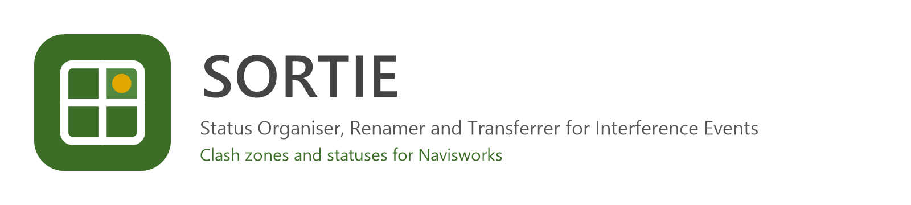

SORTIE
4,000 clashes, 200 actual problems.
- C#
- Navisworks API 2022 to 2027
- WPF
- xUnit
The problem
A clash run can report thousands of clashes when the real coordination problems number a few hundred. Sorting them by area, and keeping their statuses when tests are rerun or files change, takes days.
What it does
SORTIE (Status Organiser, Renamer and Transferrer for Interference Events) is a Navisworks Manage add-in for 2022 to 2027.
Zones. It groups clashes by the zone their clash point lies in, one group per zone, or writes the zone in front of each clash name. Zones are any 3D objects: masses, rooms, generic models or a separate zones model, and the real zone shape is used rather than its bounding box. Where zones overlap, the smallest wins.
Status transfer. It exports status, assignment, approval, description and comments of clashes and imports them into the same clashes in this or another Navisworks file, also from a Navisworks XML clash report. Clashes are matched by result GUID first and then by the clashing pair.
Clean up. It moves clashes out of their groups again, or takes the zones off their names.
See it
Screenshots & demos

